Ladder Spreads 1 — The Bull Call Ladder
A three-legged bullish spread that buys one call and writes two higher-strike calls to slash cost — profit is capped in a zone, but a naked tail lurks above the top short strike.
The bull call ladder adds a second short call to a bull call spread: buy 1 lower call, write 2 higher calls at two different strikes, for a tiny debit or even a credit. You get a superb risk/reward when the stock rallies to your cap and no further — but you also inherit a theoretically unlimited loss on an aggressive gap higher.
The gist
- The bull call ladder is 3 legs / 3 strikes: BUY 1x ATM or slightly OTM call + WRITE 2x higher-strike calls at two different higher strikes, same expiration — vs the bull call spread's 2 legs.
- Writing the second higher call cuts cost so the whole structure goes on for a small net debit or even a credit; profit is capped, and max risk is theoretically UNLIMITED.
- Profit is maximized when the stock settles at (or as close as possible to) the LOWER short strike; the zone between the two short strikes is the flat max-profit plateau.
- The killer risk is the NAKED tail above the top short strike — you are short 2 calls and long 1, so an aggressive gap higher can turn the trade into a large loss; it is NOT limited-risk up there.
- Ranked HIGH in practice (in continuous markets you can buy back one short → collapse to a bull call spread, or both → a long call) but MEDIUM in theory because of gap risk; best on LARGE/MEGA-CAP names only.
- STZ worked example (20 Apr 2018 expiry, spot $218.25): BUY 1x $220 call @ $7.60, WRITE 1x $235 call @ $2.70, WRITE 1x $240 call @ $1.80 → net debit $3.10 ($310), lower breakeven $223.10.
- STZ max profit is $1,190 in the zone $235–$240 (peaks at $235, held flat to $240); loss only begins if STZ rallies to ~$252, a +15.46% pre-earnings move ($33.75 higher).
- Risk/reward beats every alternative on this 'cap at $235' view: ladder 3.83:1 vs bull call spread 2.06:1 (debit $4.90, BE $224.90, max up $1,010) vs long call 0.97:1 (BE $227.60, max down $760).
- The short bull ratio spread was excluded outright: STZ's high price means 3x ATM calls would be ~$66,000 notional vs the desired $22,500.
What a ladder spread is
- A ladder spread uses 3 strikes / 3 legs (one more than a vertical spread).
- The bull call ladder: BUY 1x ATM or slightly OTM call + WRITE 2x higher-strike calls at two different, higher strikes — all the same expiration.
- It is a bullish directional strategy, very similar to the bull call spread but with an extra short call written on top.
The name says it: strikes stacked like rungs on a ladder. Where a bull call spread has two legs (buy one call, sell one higher), the bull call ladder adds a third — a second short call at an even higher strike — for a total of three transactions.
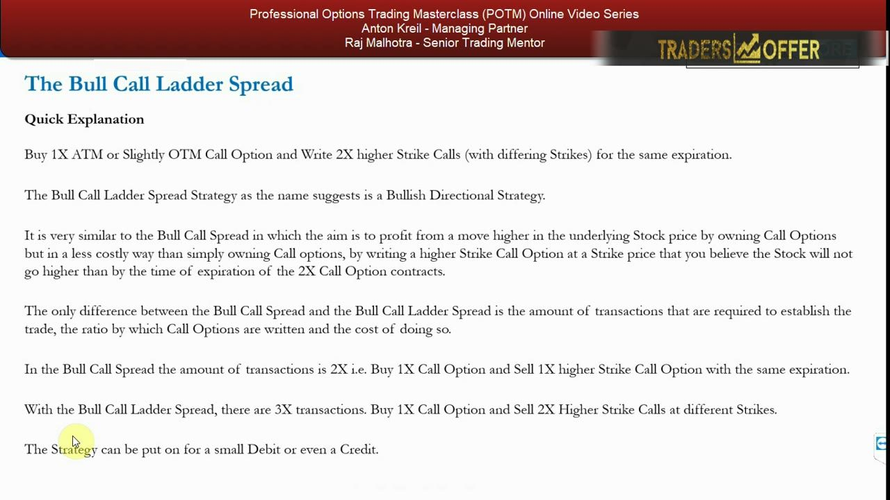
Why write two calls: cost vs the bull call spread
- The only differences from a bull call spread are the number of transactions, the ratio by which calls are written, and the overall cost.
- Writing the second higher call lowers cost significantly, so the ladder can be put on for a small debit or even a credit.
- Putting on a ladder vs a bull call spread, a long call, or owning stock is a trade-off between upfront cost and forgone profit opportunity — the opportunity cost.
The extra short call is the whole point: it drops the price of getting bullish exposure. That cheapness is the value-add — provided you have a high degree of certainty the stock won't rise above a certain price by expiration.
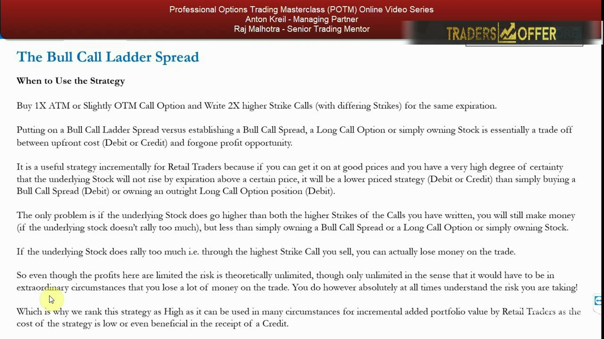
Max risk is unlimited — usefulness is HIGH in practice
- Because you are short two calls and long only one, max risk is theoretically UNLIMITED and max gain is limited.
- Ranked MEDIUM in theory due to gap risk, but HIGH in practice for the retail trader mandate.
- In continuous markets you can always buy back one or both written calls if you think the stock will rally through your short strikes.
The unlimited loss only bites in extraordinary circumstances. In live, continuous markets you retain the flexibility to close a short leg and morph the position — which is why Anton rates the real-world usefulness as high while never forgetting the tail.
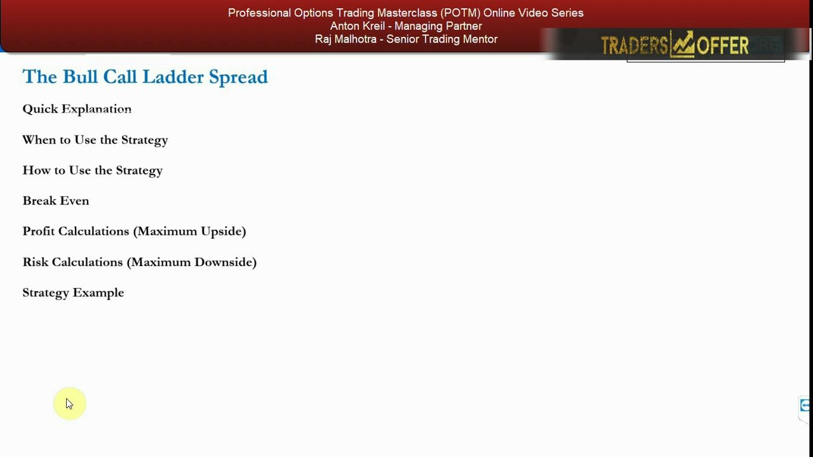
Two ways to use it — and the marginal-benefit test
- Version 1: buy an ATM call and write 2x higher-strike calls at differing strikes.
- Version 2: buy a slightly OTM call and write 2x higher-strike calls at differing strikes.
- Either way there must be a marginal benefit over a plain bull call spread, a long call, or owning stock — a better risk/reward for the fundamentals you're targeting.
Capital is always lower than owning stock outright; that part is easy. The real question is opportunity cost — does the specific ladder give you a better risk/reward than the simpler alternatives for the exact view you hold?
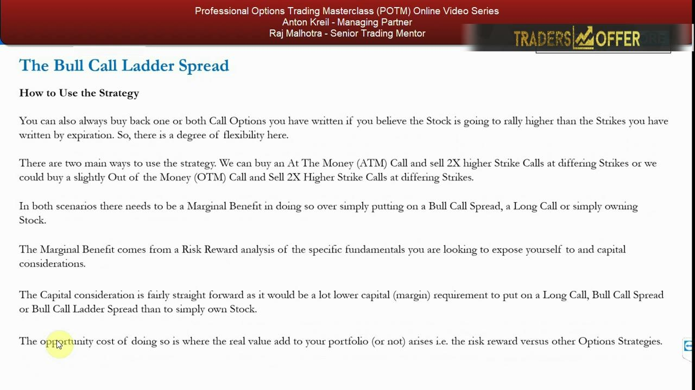
The strike-selection decision is everything
- Regardless of a moderate or explosive view, profit is maximized when the stock settles at or near the LOWER short strike at expiration.
- The biggest decision is which strikes you write: the lower short strike must be the level you genuinely believe the stock cannot rally beyond.
- The second (upper) short strike must be even higher than the first.
The lower short strike is the ceiling you're betting on. Set it at the price you truly think caps the move; the upper short strike then sits above it, defining the flat profit plateau — and the start of the naked zone beyond.
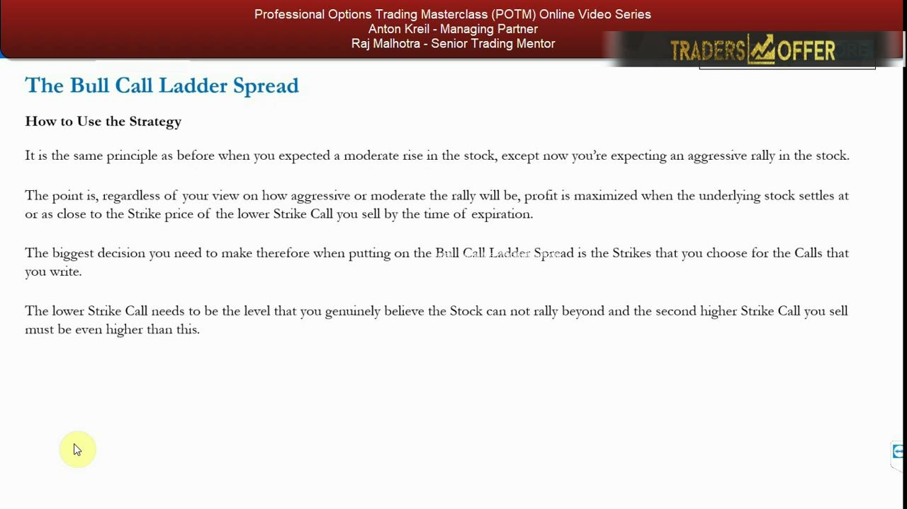
The payoff: profit peaks at the lower short strike
- You make money two ways: on the long call as the stock rises, and on the written calls via time decay.
- Ideal outcome is the stock finishing around the lower short strike — that is the max-profit point.
- Above the lower short strike the first written call moves into a loss; above the upper short strike BOTH written calls lose, and your long call can't keep pace with two shorts.
Payoff climbs to a peak at the lower short strike, then runs flat across the zone to the upper short strike. Push above the upper strike and you're short two calls against one long — profit diminishes quickly and can flip to a loss.
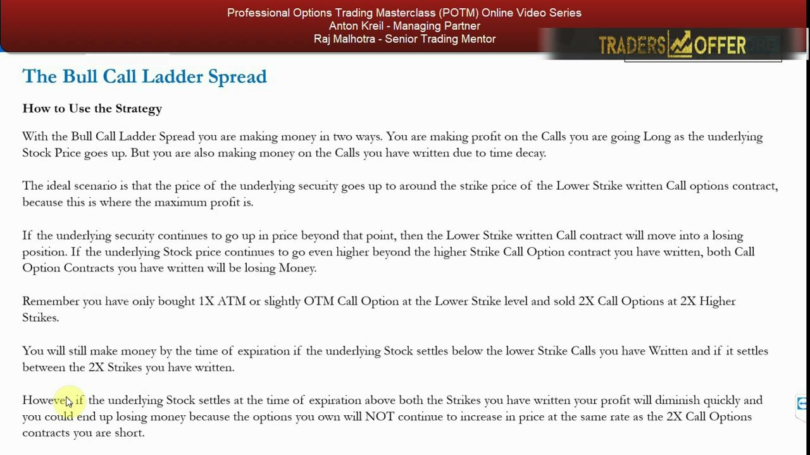
Gap risk and the buy-back escape hatch
- Gap risk is the core danger: a merger, takeover, or guidance raise while the market is closed can open the stock 30% above your top short strike, leaving a big hole.
- In continuous markets you can buy back one leg (→ left with a bull call spread) or both legs (→ left with a long call).
- Because of gap and takeover risk, the strategy suits LARGE and MEGA-CAP names — wider analyst coverage flags beats in advance and takeover risk is far lower.
Overnight gaps are the one scenario the ladder can't defend. The mitigation is picking big, well-covered names where enormous surprise moves are abnormal — and using the buy-back flexibility while markets are open.
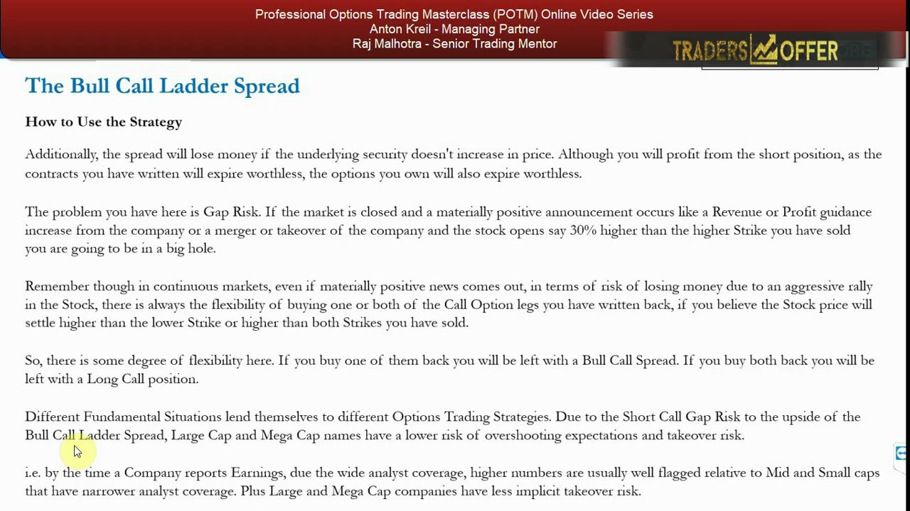
ROI, disadvantages, and the short-stock hedge use
- Higher potential ROI than a plain long call or bull call spread because cost is much lower; disadvantages are more commissions (3 legs) and more margin (writing 2x the calls you buy).
- It can also HEDGE a short stock position at low cost — you may even get paid (a credit) to put the hedge on.
- If an unexpected short squeeze hits, the ladder saves you money and gives ammunition to short more into the squeeze (if fundamentals haven't changed).
Beyond a directional bet, the ladder doubles as a cheap or credit-financed hedge against a short-stock position — capped upside, but real protection against a squeeze, since a short's dollar downside is theoretically unlimited.
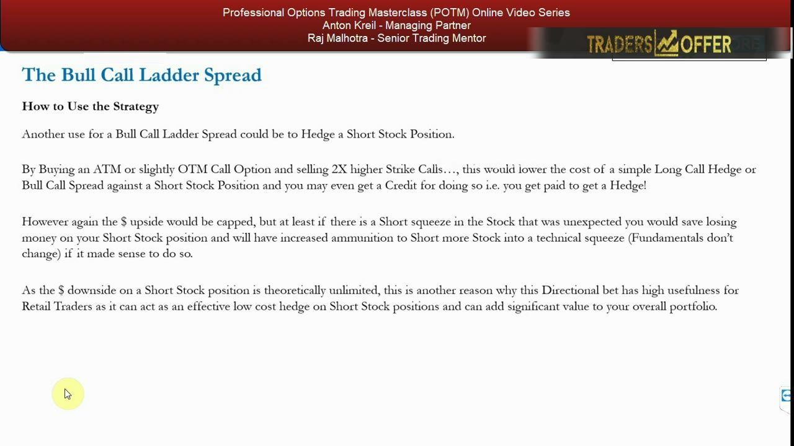
STZ setup: earnings, expiry, and MM vol pricing
- Constellation Brands (STZ): thesis is higher Q1 beer margins on Mexican imports (Corona, Modelo) → higher-than-expected group EPS, so the stock rallies into numbers then goes sideways or falls.
- Estimated earnings date April 5th, 2018 — so choose the 20 Apr 2018 chain, which comfortably encompasses the earnings date, not the 6 Apr contract.
- Market makers price volatility higher in the 20 Apr contract before earnings — that vol exposure is exactly what you want.
The expiry must straddle the earnings date with margin, because the estimated date can shift. The later expiry also carries the richer, MM-priced earnings volatility Anton is trying to capture.
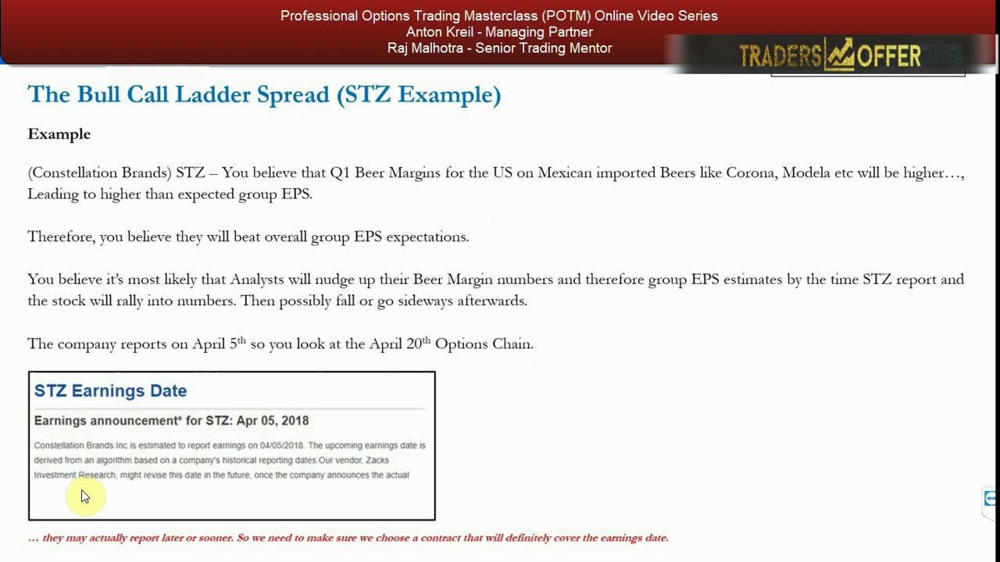
Reading the option chain
- The broker chain shows STZ calls and puts across strikes for the 20 Apr 2018 expiry, with the spot near $218.25.
- You map the intended $220 / $235 / $240 ladder onto the available strikes and premiums.
- The 20 Apr expiry is chosen specifically so the contract covers the earnings announcement.
This is the working screen where the trade is built — you scan the chain for the three strikes and confirm the expiry encompasses earnings. (The premiums used below are taken from Anton's worked slides, not read off this partly-obscured chain image.)
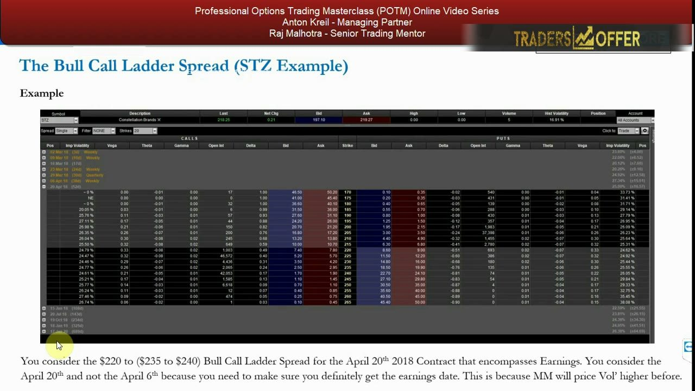
Comparison: long stock and long call
- Long stock for $22,500 exposure = 103 shares at $218.25; +$1,725.25 at $235, +$2,240.25 at $240; a $212.50 stop still loses $592.25 (and gap risk beyond).
- Long call: buy 1x $220 call @ $7.60 = $760; breakeven $227.60, max downside $760, upside unlimited.
- But at the realistic $235 target the long call makes only $740 → risk/reward 0.97 — below one, i.e. not good.
Owning stock ties up far more capital and still bleeds on a stop. The long call caps the loss but, against a modest $235 target, its risk/reward is under 1:1 — you risk $7.60 to make $7.40.
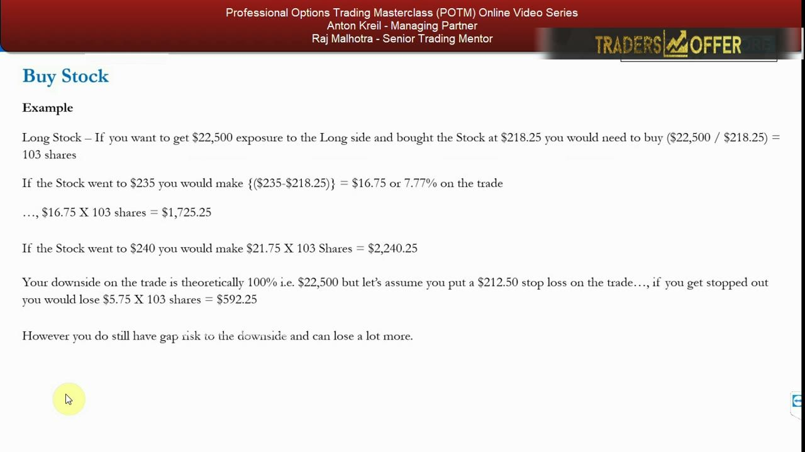
Comparison: the bull call spread
- Bull call spread: buy 1x $220 call @ $7.60, sell 1x $235 call @ $2.70 → net debit $4.90 ($490).
- Breakeven $224.90, max downside $490, max upside $1,010 (reached at $235; nothing more above).
- Risk/reward 2.06 — better than the long call, but still not good on this view.
Selling the $235 call cheapens the trade and lifts the risk/reward to 2.06:1. Solid, but Anton shows the ladder can do materially better by writing one more call above it.
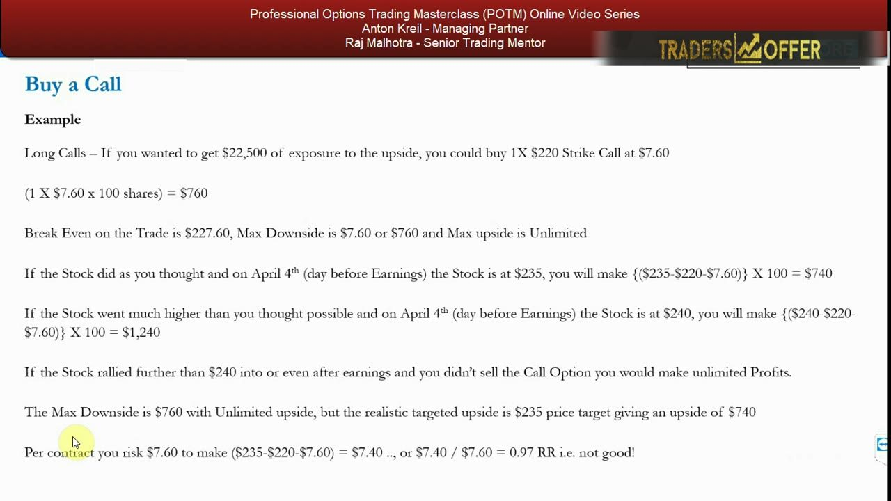
The bull call ladder: payoff mechanics
- Ladder: buy 1x $220 @ $7.60, sell 1x $235 @ $2.70, sell 1x $240 @ $1.80 → net debit $3.10 ($310); breakeven $223.10.
- Max downside $310 (if stock stays below $240); max upside $1,190, reached at $235 and held flat to $240.
- Worked at $240: long is ITM worth $2,000, the $235 short is a $500 liability; $2,000 − $500 − $310 = $1,190.
Adding the $240 short cuts the debit from $490 to just $310 while keeping the same $1,190 peak. The profit plateaus flat across the $235–$240 zone — the sweet spot of the structure.
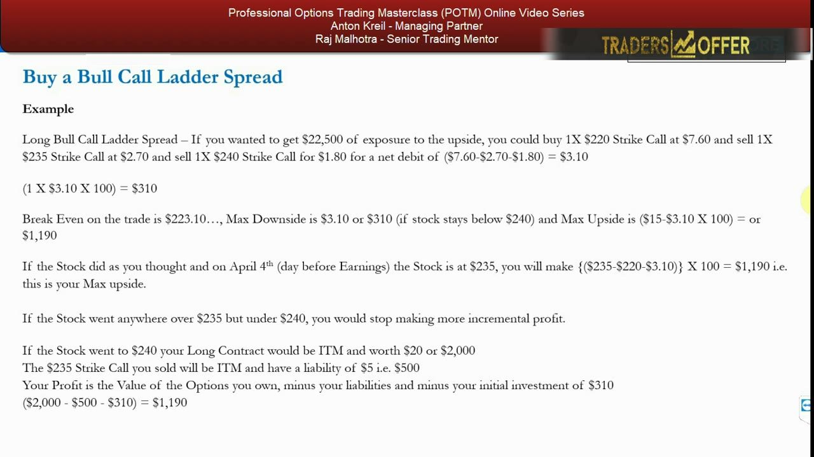
The ladder: risk/reward and the naked tail
- Risk/reward 3.83 (risk $3.10 to make $11.90) — beats long stock, long call (0.97), and bull call spread (2.06).
- Max risk is theoretically unlimited: loss only begins if STZ rallies to ~$252, a +15.46% pre-earnings move ($33.75 higher); at $245 the trade still makes $690, at $252 it's just −$10.
- The short bull ratio spread was excluded — 3x ATM $220 calls ≈ $66,000 notional vs the desired $22,500.
On the 'rallies to $235, no higher' view the ladder wins decisively at 3.83:1. The naked tail is real but far away — STZ would need a wildly abnormal +15.46% pre-earnings gap for a large-cap name before the loss even starts.
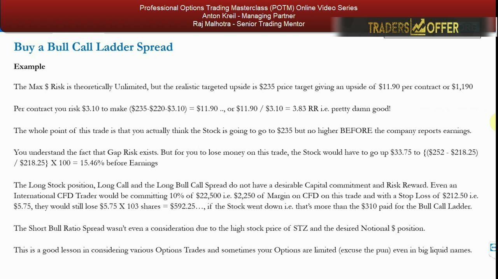
Optionality and the closing lesson
- In continuous markets you can buy back the $235 call (→ a $220/$240 bull call spread) or both shorts (→ a long call that can run to the moon).
- STZ is a ~$42bn market cap with wide analyst coverage — low takeover and low surprise-beat risk, exactly why the ladder suits it.
- The real lesson: weigh capital, risk/reward, and opportunity cost of every strategy against your fundamentals — options give you optionality, so you want to be massively right or massively wrong.
The point of the exercise is the process, not the answer. Run every candidate strategy against your view; here only the ladder had good risk/reward, and its flexibility to reshape mid-trade is the optionality that options uniquely provide.
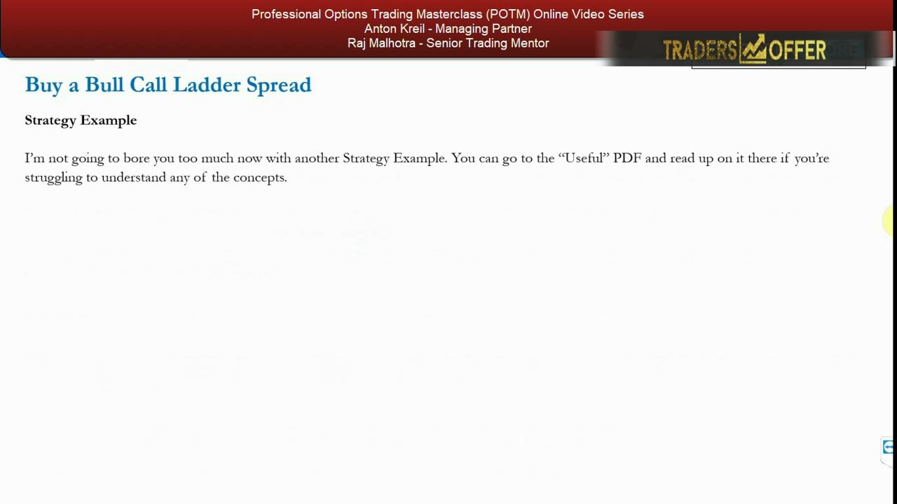
Glossary
- Bull call ladder spreadA bullish 3-leg strategy: buy 1 ATM/slightly-OTM call and write 2 higher-strike calls at two different strikes, same expiry, for a small debit or credit. Profit capped; max risk theoretically unlimited.
- Ladder spreadA spread built on 3 strikes / 3 legs (one more than a two-leg vertical spread), with strikes stacked like rungs on a ladder.
- Naked / unhedged tailThe zone above the top short strike where you are short 2 calls but long only 1 — the unhedged short exposes you to a theoretically unlimited loss on an aggressive rally.
- Profit zoneThe flat max-profit plateau between the two short strikes; profit peaks at the lower short strike and is held flat up to the upper short strike.
- Lower breakevenLong strike + net debit — the price above which the ladder starts making money (e.g. $220 + $3.10 = $223.10 for STZ).
- Gap riskThe danger that a market-closed announcement (guidance raise, merger, takeover) gaps the stock far above your top short strike, causing large losses the intraday buy-back can't prevent.
- Bull call spreadA 2-leg bullish spread: buy 1 call and sell 1 higher-strike call, same expiry. The ladder collapses to this if you buy back one short leg.
- Short bull ratio spreadA related ratio structure excluded in the STZ example because selling a lower in-the-money call would force buying ~3x ATM calls, giving ~$66,000 notional vs the desired $22,500.
- Risk/reward (R/R)Realistic max profit divided by max defined risk on the trade; STZ ladder 3.83:1 vs bull call spread 2.06:1 vs long call 0.97:1.